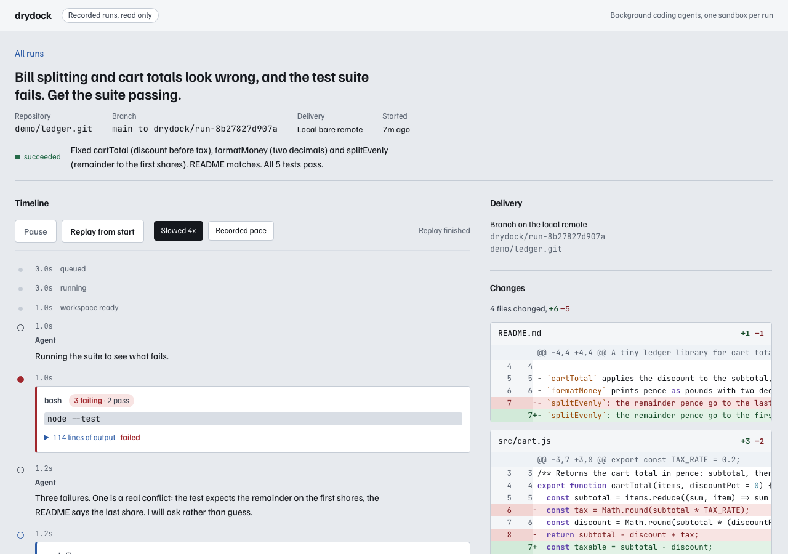
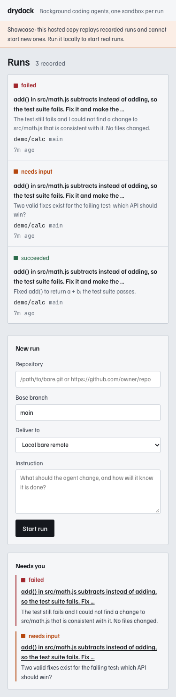

The agent works in a box. You get the branch.
drydock runs a coding agent inside its own locked-down Docker container, streams every step to a live timeline, and delivers the result as a git branch. The model’s keys and the push credentials never enter the sandbox.
The live demo replays recorded runs. It cannot start new ones: it runs on Vercel, which has no Docker. Run it locally to start real runs.
- statusstatus queued
- statusstatus running
- statusworkspace ready
- agentI'll run the test suite to see the failure first.
- bashnode --test
- resulterror: pass 0, fail 1
- agentadd() is subtracting. Reading the source before editing.
- read_filesrc/math.js
- resultexport function add(a, b) {
- agentThe operator is wrong in add(). Fixing it.
- edit_filesrc/math.js
- resultwrote 46 chars to src/math.js
- agentRe-running the suite.
- bashnode --test
- resultpass 1, fail 0
- finishsucceeded
- resultfinished
- diff+1 −1 in src/math.js
- deliverdrydock/run-4958fd73f9d8 to local remote
- outcomesucceeded
- statusstatus succeeded
The hard part is the boundary.
An agent that runs commands needs a machine, a repository and a way to push. None of the three should be trusted with more than it needs. So the sandbox gets none of the secrets, and the host does everything that touches the network or GitHub.
- Container.
--cap-drop ALL,no-new-privileges, a read-only root with a tmpfs workspace, 1 GB memory, 1 CPU, 256 PIDs, uid 1000, no host mounts. - Git in, not out. The sandbox clones over a read-only smart-HTTP route on the host. Pushes to that route are refused.
- Patches, not credentials. The host applies the sandbox’s
format-patchoutput to a fresh clone and pushes it. The GitHub token goes through git’s env config, never argv.
This is a container, not a VM. A kernel exploit escapes it, so do not treat it as a multi-tenant boundary.
How a run moves through the system
What three recorded runs did
Each row was produced by pnpm record:showcase: the real server, a real Docker sandbox and the keyless scripted model, against the same broken add() fixture. Numbers come from the recorded database rows.
| Outcome | Recorded run | Tool calls | Files changed | Delivered | Result summary |
|---|---|---|---|---|---|
| succeeded | 4958fd73f9d8 | 5 | 1 (+1 −1) | branch on local remote | Fixed add() to return a + b; the test suite passes. |
| needs input | f7140d5b6960 | 1 | 0 | no | Two valid fixes exist for the failing test; which API should win? |
| failed | 099fc87e07c4 | 3 | 0 | no | The test still fails and I could not find a change to src/math.js that is consistent with it. No files changed. |
The agent in these runs is a fixed script, not a language model. That is what makes them repeatable, and it is also why they prove the plumbing (sandbox, git, delivery, inbox) but not the model’s judgment. The live Anthropic path has not been run end to end.


Run it yourself.
You need Node 25 (or 22.13+), pnpm 10 and Docker. These are the README’s commands; the last one submits a task to a scripted agent, follows the timeline, and checks the tests pass in the sandbox.
pnpm install
pnpm sandbox:build # builds drydock-sandbox:latest (node:22-alpine + git, non-root)
pnpm demo # keyless end-to-end run (starts the API, runs and tears down)Then pnpm web and open http://127.0.0.1:4101/ to read the run page. A real model needs a key in .env; see the README.
What it does not do yet.
- Local-path repos are published by symlink on the git route, which is readable by anything that can reach 127.0.0.1:4100. Fine for one developer’s machine, not a shared host.
- Containers keep a normal bridge network, so they can reach the internet. A per-run network with an egress allow-list would close this.
- Private GitHub repos are not supported: the sandbox clones unauthenticated.
- The live Anthropic path has not been verified end to end, and the GitHub delivery path is tested only against a fake fetch.
- There is no per-tool approval gate. Review happens in the PR, after the run.
- One process with an in-memory queue rebuilt from SQLite. Multi-host needs a real job queue.
About the live demo.
The live demo is at drydock-demo-opal.vercel.app. It is a Vercel function over the three recorded runs above, read-only. Events replay with the gaps they had when they were recorded, so the succeeded run takes about one second. A slowed option stretches every gap four times and keeps the order. The agent in those runs is a scripted model. No language model is called, and no model key is set on the live demo.
To try it locally with the same recorded runs, run pnpm showcase and open http://127.0.0.1:4100/. Start a real run with pnpm api and Docker.
Every write and every git route on the hosted copy returns 403 showcase mode: run it locally to start real runs.